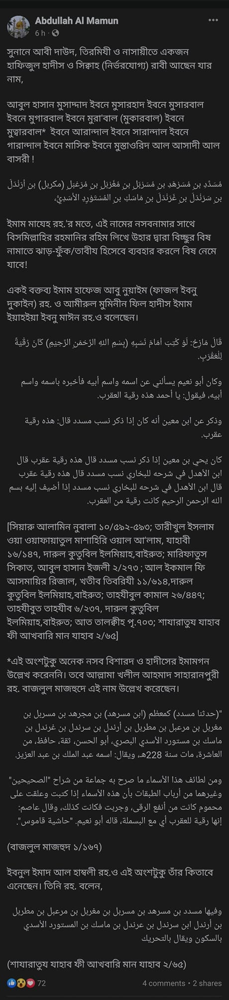

আকিদার বড় বড় শাইখরা যখন মানুষকে শিরকের দিকে আহবান করেন, তখন তা চরম আফসোসের বিষয়!
১৫ নভেম্বর, ২০২২
আকিদার বড় বড় শাইখরা যখন মানুষকে শিরকের দিকে আহবান করেন, তখন তা চরম আফসোসের বিষয়!
হাদিসের একজন রাবির নসবনামা হচ্ছে এরকম-
"আবুল হাসান মুসাদ্দাদ ইবনে মুসারহাদ ইবনে মুসারবাল ইবনে মুগারবাল ইবনে মুরা'বাল (মুকারবাল) ইবনে মুত্বারবাল* ইবনে আরান্দাল ইবনে সারান্দাল ইবনে গারান্দাল ইবনে মাসিক ইবনে মুস্তাওরিদ আল আসাদী আল বাসরী" !
প্রথমত, এটি প্রমাণিত নয়। বড় বড় ইমামরা এর সমালোচনা করেছেন, বাতিল আখ্যা দিয়েছেন।
দ্বিতীয়ত, পোস্টকারীর বক্তব্য থেকে এরকম উদ্ভট নাম দিয়ে রুকইয়া করার বৈধতা প্রমাণিত হচ্ছে। অথচ, শরিয়তে ইসলামিয়ায় কোরআন ও হাদিসের বাহিরে ফালতু জিনিস দিয়ে রুকইয়া করা হারাম।
তিনি আরও এগিয়ে খলিল আহমেদ সাহরানপুরী রাহ. কৃত বাজলুল মাজহুদের রেফারেন্স এনে এ নসবনামা কাগজে লিখে জ্বরাক্রান্ত ব্যক্তির গলায় তাবিজ হিসেবে ব্যবহারের প্রমাণও দিচ্ছেন। নাউজুবিল্লাহ!!!
অথচ, যারা তাবিজ ব্যবহার বৈধ বলেন, তাদের মতেও গায়রুল্লাহ'র নাম বা অস্পষ্ট কোনো জিনিস/নাম তাবিজে ব্যবহার বৈধ নয়; বরং শিরক।
আল্লাহ এ অবুঝ জাতির ঈমানকে হেফাজত করুন। আমিন
